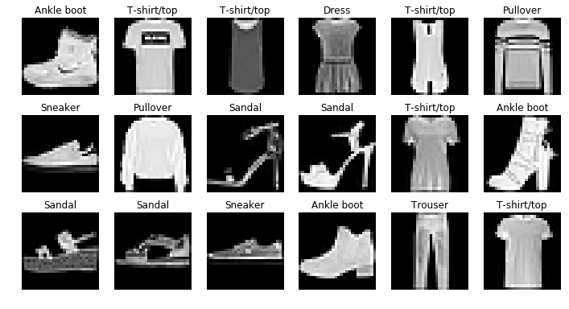

Fashion-MNIST CNN分类
Boylad · 2019-12-06
Fashion-MNIST数据集比MNIST的难度更大，更有代表性，且与MNIST的数据结构完全相同，同样是60000+10000张28x28的灰度图像，目标也是分成10类：0表示T恤，1表示裤子，2表示套头衫，3表示连衣裙，4表示外套，5表示凉鞋，6表示衬衫，7表示运动鞋，8表示袋包，9表示靴子。本文在MXNet框架下使用CNN对Fashion-MNIST数据进行分类。
import os
import gzip
import struct
import logging
import mxnet as mx
import numpy as np
import matplotlib.pyplot as plt
logging.getLogger().setLevel(logging.DEBUG)
下载数据后，数据预处理：
def read_data(label_url, image_url):
with gzip.open(label_url) as flbl: #打开文件标签
magic, num = struct.unpack('>II', flbl.read(8)) #读入标签文件头
label = np.frombuffer(flbl.read(), dtype = np.int8) #读入标签内容
with gzip.open(image_url, 'rb') as fimg: #打开图像文件
magic,num,rows,cols = struct.unpack('>IIII', fimg.read(16)) #读入图像文件头
image = np.frombuffer(fimg.read(), dtype = np.uint8) #读入图像内容
image = image.reshape(len(label), 1, rows, cols)
image = image.astype(np.float32) / 255.0 #归一化
return (label, image)
(train_lbl, train_img) = read_data('train-labels-idx1-ubyte.gz',
'train-images-idx3-ubyte.gz')
(val_lbl, val_img) = read_data('t10k-labels-idx1-ubyte.gz',
't10k-images-idx3-ubyte.gz')
batch_size = 32
查看训练集前18张图片及其标签：
real_lbl = ['T-shirt/top', 'Trouser', 'Pullover', 'Dress', 'Coat', 'Sandal',
'Shirt', 'Sneaker', 'Bag', 'Ankle boot']
plt.figure(figsize = (12,6.3))
for i in range(18):
plt.subplot(3,6,i+1)
plt.imshow(train_img[i].reshape(28,28), cmap='gray')
plt.title(real_lbl[train_lbl[i]])
plt.axis('off')
plt.show()

用于辅助定义网络，深度卷积网络中常用的"卷积-BN-非线性"模块：
def CBA(src, suffix, num_filter, kernel, pad):
conv = mx.sym.Convolution(data=src, name='conv'+suffix,
kernel=(kernel,kernel), pad=(pad,pad),
num_filter=num_filter)
bn = mx.sym.BatchNorm(data=conv, name='bn'+suffix, fix_gamma=False)
act = mx.sym.Activation(data=bn, name='act'+suffix, act_type='relu')
return act
用于辅助定义网络，在每2个卷积层后加1个池化层：
def LAYER(src, layer, num_filter, pad):
conv1 = CBA(src, layer+'1', num_filter, 3, pad)
conv2 = CBA(conv1, layer+'2', num_filter, 3, pad)
pool = mx.sym.Pooling(data=conv2, name='pool'+layer, pool_type='max',
kernel=(2,2), stride=(2,2))
return pool
CNN架构：
# 设置网络
data = mx.symbol.Variable('data')
# 将1*28*28变换为32*14*14
net = LAYER(data, '1', 32, 1)
# 将32*14*14变换为64*7*7
net = LAYER(net, '2', 64, 1)
# 将64*7*7变换为64*3*3
net = LAYER(net, '3', 64, 1)
# 将64*3*3变换为128*1*1
net =CBA(net, '4', 128, 3, 0)
# 将128*1*1变为10*1*1
net = mx.sym.Convolution(data=net, name='final', kernel=(1,1), num_filter=10)
# 将10*1*1变换为10
net = mx.sym.Flatten(data=net, name='flatten')
net= mx.sym.SoftmaxOutput(data=net, name='softmax')
输出参数情况：
shape = {'data': (batch_size, 1, 28, 28)}
mx.viz.print_summary(symbol=net, shape=shape)
___________________________________________________________________
Layer (type) Output Shape Param # Previous Layer
===================================================================
data(null) 1x28x28 0
___________________________________________________________________
conv11(Convolution) 32x28x28 320 data
___________________________________________________________________
bn11(BatchNorm) 32x28x28 64 conv11
___________________________________________________________________
act11(Activation) 32x28x28 0 bn11
___________________________________________________________________
conv12(Convolution) 32x28x28 9248 act11
___________________________________________________________________
bn12(BatchNorm) 32x28x28 64 conv12
___________________________________________________________________
act12(Activation) 32x28x28 0 bn12
___________________________________________________________________
pool1(Pooling) 32x14x14 0 act12
___________________________________________________________________
conv21(Convolution) 64x14x14 18496 pool1
___________________________________________________________________
bn21(BatchNorm) 64x14x14 128 conv21
___________________________________________________________________
act21(Activation) 64x14x14 0 bn21
___________________________________________________________________
conv22(Convolution) 64x14x14 36928 act21
___________________________________________________________________
bn22(BatchNorm) 64x14x14 128 conv22
___________________________________________________________________
act22(Activation) 64x14x14 0 bn22
___________________________________________________________________
pool2(Pooling) 64x7x7 0 act22
___________________________________________________________________
conv31(Convolution) 64x7x7 36928 pool2
___________________________________________________________________
bn31(BatchNorm) 64x7x7 128 conv31
___________________________________________________________________
act31(Activation) 64x7x7 0 bn31
___________________________________________________________________
conv32(Convolution) 64x7x7 36928 act31
___________________________________________________________________
bn32(BatchNorm) 64x7x7 128 conv32
___________________________________________________________________
act32(Activation) 64x7x7 0 bn32
___________________________________________________________________
pool3(Pooling) 64x3x3 0 act32
___________________________________________________________________
conv4(Convolution) 128x1x1 73856 pool3
___________________________________________________________________
bn4(BatchNorm) 128x1x1 256 conv4
___________________________________________________________________
act4(Activation) 128x1x1 0 bn4
___________________________________________________________________
final(Convolution) 10x1x1 1290 act4
___________________________________________________________________
flatten(Flatten) 10 0 final
___________________________________________________________________
softmax(SoftmaxOutput) 10 0 flatten
===================================================================
Total params: 214890
___________________________________________________________________
使用GPU：
module = mx.mod.Module(symbol = net, context = mx.gpu(0))
迭代器：测试数据
val_iter = mx.io.NDArrayIter(val_img, val_lbl, batch_size)
手动循环40个epoch：
for epoch in range(40):
aug_img = train_img.copy()
# 修改其中的每幅图像
for i in range(aug_img.shape[0]):
# 有50%的概率左右翻转
if np.random.random() < 0.5:
# aug_img[i][0]为第i号样本的0号通道，灰度图像只有0通道
# fliplr()用于左右翻转
aug_img[i][0] = np.fliplr(aug_img[i][0])
# 左右移动最多2个像素，注意randint(a,b)的范围为a到b-1
amt = np.random.randint(0, 3)
if amt > 0: # 如果需要移动...
if np.random.random() < 0.5: # 左移动还是右移动？
# pad()用于加上外衬，因为移动后减少的区域需补零
# 然后用[:]取所需要的部分
aug_img[i][0] = np.pad(aug_img[i][0], ((0,0), (amt,0)),
mode='constant')[:, :-amt]
else:
aug_img[i][0] = np.pad(aug_img[i][0], ((0,0), (0, amt)),
mode='constant')[:, amt:]
# 上下移动做多2个像素
if amt > 0:
if np.random.random() < 0.5:
aug_img[i][0] = np.pad(aug_img[i][0], ((amt,0), (0, 0)),
mode='constant')[:-amt, :]
else:
aug_img[i][0] = np.pad(aug_img[i][0], ((0, amt), (0, 0)),
mode='constant')[amt:, :]
# 随机清零最大5*5的区域
x_size = np.random.randint(1, 6)
y_size = np.random.randint(1, 6)
x_begin = np.random.randint(0, 28-x_size+1)
y_begin = np.random.randint(0, 28-y_size+1)
aug_img[i][0][x_begin:x_begin+x_size, y_begin:y_begin+y_size+1] = 0
# 每个epoch重设训练数据
train_iter = mx.io.NDArrayIter(aug_img, train_lbl, batch_size, shuffle=True)
# 每个epoch降低学习率
lr = 0.06*pow(0.95, epoch)
# 输出当前epoch信息
print("epoch" + str(epoch) + ", learning rate = " + str(lr))
# 训练
module.fit(train_iter, eval_data=val_iter, optimizer='sgd',
optimizer_params={'learning_rate':lr},
num_epoch=1, # 每次训练1个epoch
batch_end_callback = mx.callback.Speedometer(batch_size,
60000/batch_size))
输出如下：
epoch0, learning rate = 0.06
INFO:root:Epoch[0] Train-accuracy=0.953783
INFO:root:Epoch[0] Time cost=23.421
INFO:root:Epoch[0] Validation-accuracy=0.940395
epoch1, learning rate = 0.056999999999999995
INFO:root:Epoch[0] Train-accuracy=0.954700
INFO:root:Epoch[0] Time cost=23.664
INFO:root:Epoch[0] Validation-accuracy=0.941294
...
epoch39, learning rate = 0.008116557256743356
INFO:root:Epoch[0] Train-accuracy=0.965033
INFO:root:Epoch[0] Time cost=27.186
INFO:root:Epoch[0] Validation-accuracy=0.943091
网络仅有214890个参数，配合数据增强，在Fashion-MNIST上可实现94.3%的准确率。